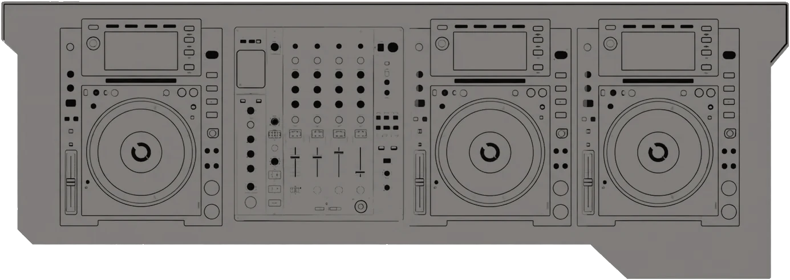

Sets
Sus sets filmados suman más de 1,6 millones de vistas en YouTube.
120bpm studio 157+ BPM
Bio
Martina Høbelar, DJ y productora argentina, nacida el 18 de enero de 2004. Co-founder de Sangre Club y organizadora de Groove Selections. Oriunda de Buenos Aires.
El sonido de Martina Høbelar se caracteriza por una energía cruda, intensa y profundamente orientada a la pista. Su propuesta transita entre ritmos contundentes, percusiones hipnóticas y una atmósfera de tensión constante, construyendo sets que combinan fuerza, velocidad y movimiento.
Con una marcada influencia hacia la cultura rave, Martina, con sus producciones y sus sets, explora distintas capas de intensidad sin perder el groove. Su selección se mueve entre texturas oscuras, golpes precisos y secuencias repetitivas que generan un estado de inmersión progresiva.
Más que una sucesión de tracks, sus sets funcionan como un recorrido de energía: una construcción dinámica en la que el ritmo se vuelve protagonista y la pista, el espacio donde todo termina de tomar forma.
- Base
- Buenos Aires, Argentina
- Sangre Club
- Co-founder
- Groove Selections
- Organizadora
- Géneros
- Hard techno, schranz, neorave y hard groove
Tracks firmados
- Milay
- Paradox Collective
- Agorafobia
- Arzaffel Records
Fotos
Abrí una foto para verla en grande y descargarla en JPG.
Rider

- Reproductores
- 3 × Pioneer CDJ-2000 Nexus 2
- Mixer
- Pioneer DJM-900 Nexus
- BPM en sus sets
- De 146 a 165
- Cambios
- Para cambios en el setup, consultar.
Booking
Fechas, prensa y colaboraciones.